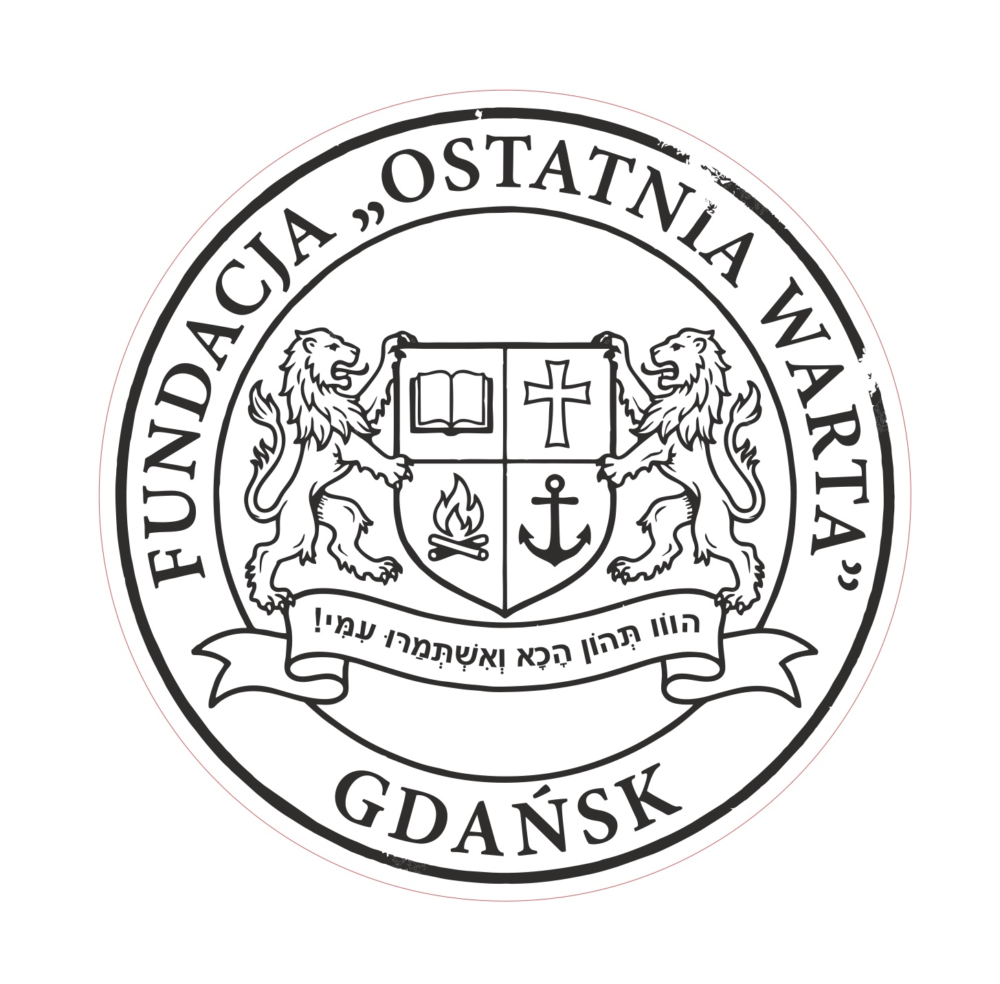

Niniejsza Księga Znaku określa zasady posługiwania się logotypem, barwami firmowymi, typografią oraz elementami identyfikacji wizualnej i urzędowej Fundacji „Ostatnia Warta”. Stosowanie się do poniższych wytycznych jest obowiązkowe we wszystkich materiałach promocyjnych, urzędowych i cyfrowych, co gwarantuje spójność i profesjonalny wizerunek organizacji.
Logotyp Fundacji stanowi wizualny manifest naszych najwyższych wartości: empatii, wiary, wierności tradycji oraz niezłomnego trwania przy drugim człowieku. Jego heraldycznym fundamentem jest historyczny herb rodziny Belchnerowskich. Znak ten, z pietyzmem zrekonstruowany na podstawie żywej tradycji i ustnych przekazów pielęgnowanych w rodzie od czterech pokoleń, uosabia ciągłość i gotowość do służby społecznej.
Pieczęć okrągła zawierająca tarczę heraldyczną podzieloną na cztery pola. Umieszczono w nich: otwartą księgę, krzyż chrześcijański, ognisko oraz kotwicę – uniwersalne symbole mądrości, wiary, domowego ciepła i nadziei.
Tarczę podtrzymują dwa lwy stylizowane na gdańskie, podkreślające nierozerwalną więź Fundacji z historią i tożsamością miasta.
Pod tarczą znajduje się szarfa z napisem zapisanym klasycznym alfabetem hebrajskim (הווו תהון הכא ואשתמרו עמי). Słowa „Zostańcie tu i czuwajcie ze mną” to historyczny i duchowy archetyp misji Fundacji. Wypowiedział je Jezus Chrystus w Ogrodzie Oliwnym w swoim najtrudniejszym, ludzkim momencie trwogi.

Ciemnozielone elementy logotypu na białym tle, wzbogacone o akcenty w kolorze Głębokiej Czerwieni (np. sekundnik) i Złota. Podstawowy znak do dokumentów i stron www.
Dedykowana do materiałów premium. Na ciemnozielonym tle kontury logotypu przyjmują kolor Czystej Bieli (#FFFFFF), a detale wewnętrzne pozostają w kolorze Złotym (#D4AF37).
Dopuszczalny wariant logotypu wykorzystujący paletę barw uzupełniających (Głęboka Czerwień). Stosowany w określonych materiałach promocyjnych lub akcjach specjalnych.
Wizerunek Fundacji opiera się na wyważonej, eleganckiej palecie barw, która budzi zaufanie, powagę oraz spokój.
HEX: #133a2d | RGB: 19, 58, 45
HEX: #D4AF37 | RGB: 212, 175, 55 | CMYK: 15, 25, 85, 5
HEX: #a83232 | RGB: 168, 50, 50
HEX: #1a5f4a | RGB: 26, 95, 74
HEX: #333333 | RGB: 51, 51, 51
HEX: #FCFCFC | Czysta Biel: #FFFFFF
Zgodnie z Uchwałą Zarządu nr 4/2026, Fundacja stosuje ściśle określone wzory pieczęci urzędowych. Wszystkie zatwierdzone pieczęcie występują wyłącznie w kolorze czerwonym.
Oficjalna korespondencja e-mail musi zawierać spójną stopkę informacyjno-prawną. Poniżej znajduje się oficjalny wzór układu: